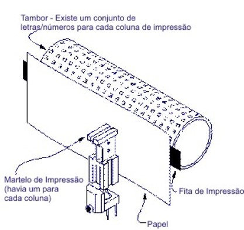

Avanços Tecnológicos
1984: Impressão Postscript é criada pela Adobe; HP pioneira na tecnologia de jato de tinta.
Filmes/Desenhos/Séries
1982: estreia nos cinemas o filme "E.T, o Extra Terrestre".
Músicas de Sucesso
1982: estreia nos cinemas o filme "E.T, o Extra Terrestre".
Acontecimentos diversos
1980: estreia nos cinemas o filme "E.T, o Extra Terrestre".